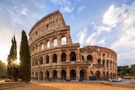

Punta Cana

A tropical paradise in the Dominican Republic, famous for its white sandy beaches and turquoise waters.
- Province/State: La Altagracia
- Country: Dominican Republic
- Population: ~50,000
- Latitude/Longitude: 18.5601° N, 68.3725° W
Islas Galápagos
An archipelago in Ecuador, known for its unique wildlife and Charles Darwin’s inspiration for the theory of evolution.
- Province/State: Galápagos
- Country: Ecuador
- Population: ~30,000
- Latitude/Longitude: 0.00° S, 90.00° W
Barcelona

A vibrant city in Spain, known for Gaudí’s architecture, beaches, and its famous football club.
- Province/State: Catalunia
- Country: Spain
- Population: ~1.6 million
- Latitude/Longitude: 41.3874° N, 2.1686° E
Roma
The capital of Italy, filled with ancient history, landmarks like the Colosseum, and Vatican City.
- Province/State: Roma
- Country: Italy
- Population: ~2.8 million
- Latitude/Longitude: 41.9028° N, 12.4964° E
La Patagonia
A region shared by Argentina and Chile, famous for its glaciers, mountains, and stunning natural landscapes.
- Province/State: Varies (Santa Cruz, Chubut, Magallanes,)
- Country: Argentina & Chile
- Population: ~2 million (between both)
- Latitude/Longitude: ~46.5° S, 71.0° W